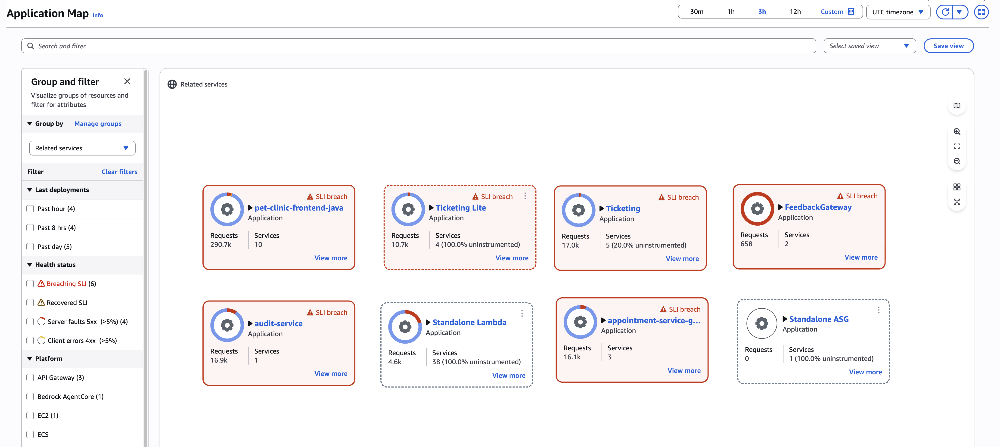
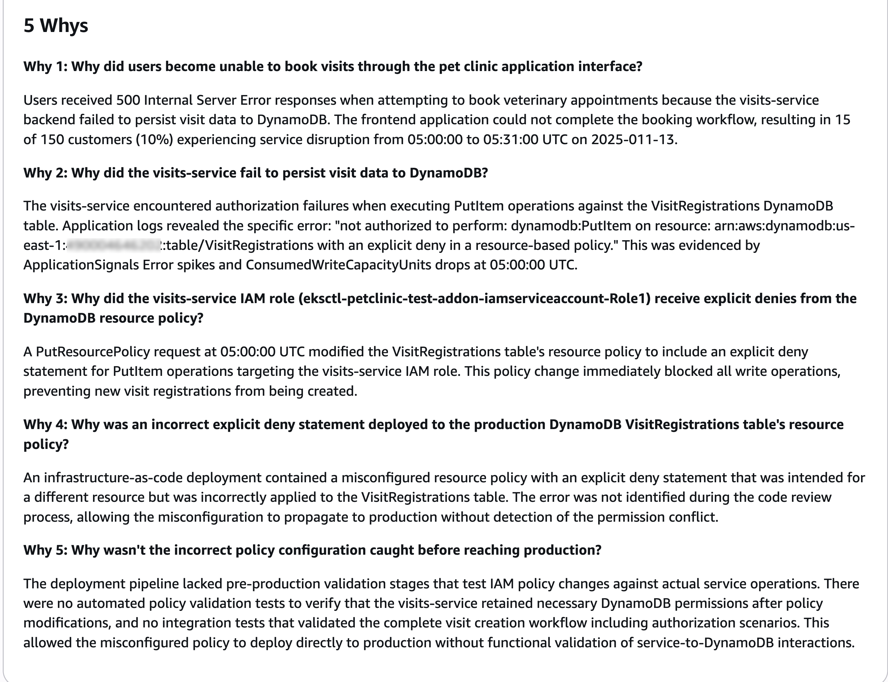
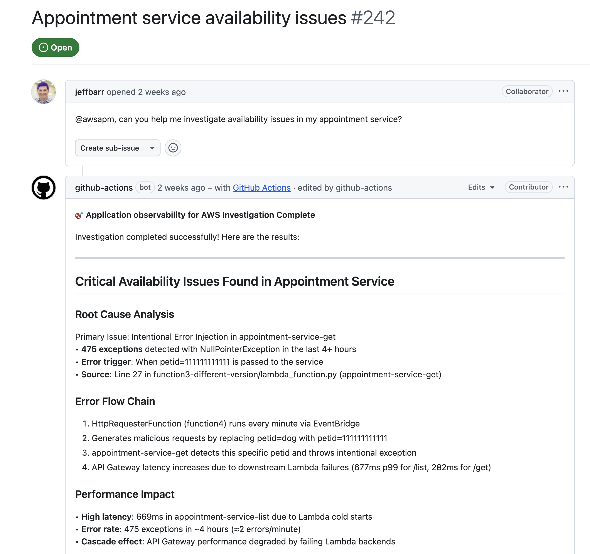

Blog 6: 10 Công bố Hàng đầu về AWS Cloud Operations tại re:Invent 2025
Tổng quan: Định hình lại Vận hành Cloud với AI
Tại re:Invent 2025, AWS đã công bố hàng loạt cải tiến quan trọng cho Cloud Operations. Trọng tâm của năm nay xoay quanh việc ứng dụng Generative AI để quan sát và xử lý sự cố, đồng thời đơn giản hóa việc quản lý dữ liệu vận hành quy mô lớn thông qua các tính năng tập trung hóa (centralization).
Dưới đây là ghi chú chi tiết về 10 công bố hàng đầu giúp tối ưu hóa quy trình vận hành trên AWS.
1. Quan sát Generative AI trên CloudWatch và AgentCore
AWS ra mắt khả năng quan sát toàn diện cho các ứng dụng Generative AI. Tính năng này cung cấp thông tin chi tiết về độ trễ (latency), lượng token sử dụng và các lỗi phát sinh trong AI stack. Đặc biệt, nó tích hợp mượt mà với Amazon Bedrock AgentCore và các framework mã nguồn mở như LangChain hay CrewAI mà không cần viết code instrumentation thủ công.

[Figure 1] Amazon CloudWatch Generative AI dashboard
Giao diện quản lý Agent cũng giúp theo dõi luồng hoạt động của agent từ đầu đến cuối (end-to-end):

[Figure 2] Agent Management View
2. CloudWatch Application Map tự động phát hiện dịch vụ
Trước đây để vẽ bản đồ ứng dụng (Application Map), chúng ta thường phải cài đặt instrumentation phức tạp. Giờ đây, CloudWatch Application Signals có khả năng tự động phát hiện và trực quan hóa cấu trúc ứng dụng (topology), hiển thị các mối quan hệ phụ thuộc giữa các dịch vụ ngay lập tức. Tính năng này giúp nhóm vận hành có cái nhìn tổng quan về hệ thống nhanh chóng hơn.

[Figure 3] CloudWatch Application Map
3. Phân tích nguyên nhân gốc rễ (5 “Whys”) và tạo báo cáo sự cố
Đây là bước tiến lớn trong AIOps. CloudWatch Investigations tận dụng Generative AI để tự động hóa quy trình phân tích nguyên nhân gốc rễ. Thay vì phải tự tổng hợp dữ liệu, hệ thống sẽ tạo ra một báo cáo sự cố tương tác.

[Figure 4] Amazon CloudWatch Investigations Incident Report
Đáng chú ý nhất là quy trình phân tích “5 Whys” (5 câu hỏi Tại sao) được tích hợp sẵn, mô phỏng phương pháp xử lý lỗi nội bộ của Amazon (Correction of Errors - COE), giúp tìm ra nguyên nhân sâu xa của vấn đề một cách hệ thống.

[Figure 5] 5 Whys Analysis in the CloudWatch investigations Incident Report
4. Hỗ trợ Model Context Protocol (MCP) Servers
CloudWatch và Application Signals hiện đã hỗ trợ Model Context Protocol (MCP) servers. Điều này đóng vai trò cầu nối, cho phép các trợ lý AI (AI assistants) tương tác tự nhiên với dữ liệu quan sát (metrics, logs, traces). Nhờ đó, chúng ta có thể xây dựng các quy trình vận hành tự trị và tích hợp dữ liệu CloudWatch vào các công cụ phát triển hỗ trợ bởi AI.
5. Tích hợp GitHub Action và cải tiến MCP cho Application Signals
Để hỗ trợ tốt hơn cho developer, CloudWatch Application Signals đã được tích hợp trực tiếp vào GitHub Actions. Tính năng này cung cấp thông tin quan sát ngay trong các Pull Request và CI/CD pipelines.
Nó giúp phát hiện các vấn đề về hiệu năng hoặc lỗi hệ thống mà không cần rời khỏi môi trường phát triển GitHub:

[Figure 6] Automated Root Cause Analysis in the GitHub issues
Thậm chí, hệ thống còn có khả năng đề xuất các bản vá lỗi tự động thông qua Pull Request:

[Figure 7] Automated GitHub Pull Request to Fix the Issue
6. Nâng cấp trải nghiệm Log Analytics trên OpenSearch Service
Amazon OpenSearch Service giới thiệu các cải tiến đáng kể cho ngôn ngữ Piped Processing Language (PPL). Việc phân tích log trở nên nhanh hơn và trực quan hơn. Khả năng truy vấn nâng cao giúp xử lý các truy vấn phân tích phức tạp hiệu quả, đồng thời tích hợp liền mạch với CloudWatch Logs để phân tích log thống nhất.
7. Real User Monitoring (RUM) hỗ trợ Mobile (iOS/Android)
Amazon CloudWatch RUM mở rộng khả năng giám sát trải nghiệm người dùng thực sang nền tảng di động. Giờ đây, chúng ta có thể theo dõi hiệu năng, hành trình người dùng và lỗi phía client (client-side errors) trên các ứng dụng iOS và Android, giúp đảm bảo trải nghiệm đồng nhất trên mọi thiết bị và vị trí địa lý.
8. CloudTrail: Tổng hợp sự kiện dữ liệu (Data Event Aggregation)
Để giải quyết vấn đề khối lượng log khổng lồ từ các API activity, AWS CloudTrail thêm tính năng Event Aggregation. Thay vì ghi lại từng dòng log riêng lẻ, hệ thống sẽ tóm tắt các hoạt động tần suất cao thành các bản tổng hợp mỗi 5 phút.
Việc này giúp:
- Giảm chi phí lưu trữ log.
- Dễ dàng phát hiện các mẫu bất thường (như truy cập S3 lạ hoặc DynamoDB throttling) mà không cần phân tích thủ công quá nhiều dữ liệu thô.
9. Tập trung Log Đa tài khoản & Đa vùng (Log Centralization)
Đây là tính năng được mong chờ cho các tổ chức lớn. CloudWatch Logs Centralization cho phép gom log từ nhiều tài khoản (Accounts) và nhiều vùng (Regions) khác nhau về một tài khoản đích duy nhất.
- Tích hợp với AWS Organizations.
- Tự động thêm context
@aws.accountvà@aws.regionvào log để dễ truy xuất nguồn gốc. - Tiết kiệm chi phí (không tốn phí ingestion cho bản copy đầu tiên).
10. Giám sát Database tập trung Đa tài khoản & Đa vùng
Tương tự như log, CloudWatch Database Insights cũng hỗ trợ giám sát tập trung. Chúng ta có thể theo dõi hiệu năng của Amazon RDS, Amazon Aurora, và Amazon DynamoDB trên toàn bộ tổ chức AWS từ một tài khoản giám sát duy nhất. Điều này giúp liên kết hiệu năng database với sức khỏe ứng dụng dễ dàng hơn.
Kết luận
Các công bố năm 2025 cho thấy AWS đang tập trung giải quyết bài toán “quá tải dữ liệu vận hành” bằng cách sử dụng AI để lọc nhiễu và tự động hóa phân tích. Từ việc giám sát GenAI, đến việc dùng GenAI để sửa lỗi, và khả năng quản lý tập trung (Centralization), các công cụ này giúp người vận hành chuyển từ trạng thái bị động sang chủ động kiểm soát hệ thống.
Tác giả

Nereida Woo
Nereida is a WW Specialist Solutions Architect in Cloud Operations focusing on Centralized Operations Management and Application operations on AWS. When she isn't working, she enjoys traveling to attend music concerts.

Calvin Weng
Calvin Weng is a Product Marketing Manager for AWS Cloud Operations, focusing on observability and monitoring services. Outside of work, Calvin travels, practices pottery, plays ping pong competitively, and explores the Pacific Northwest with his dog Kai.
Raviteja Sunkavalli
Raviteja Sunkavalli is a Senior Worldwide Specialist Solutions Architect at Amazon Web Services, specializing in AIOps and GenAI observability. He helps global customers implement observability and incident management solutions across complex and distributed cloud environments. Outside of work, he enjoys playing cricket and exploring new cooking recipes.